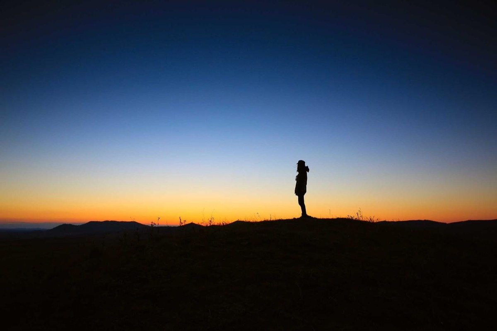
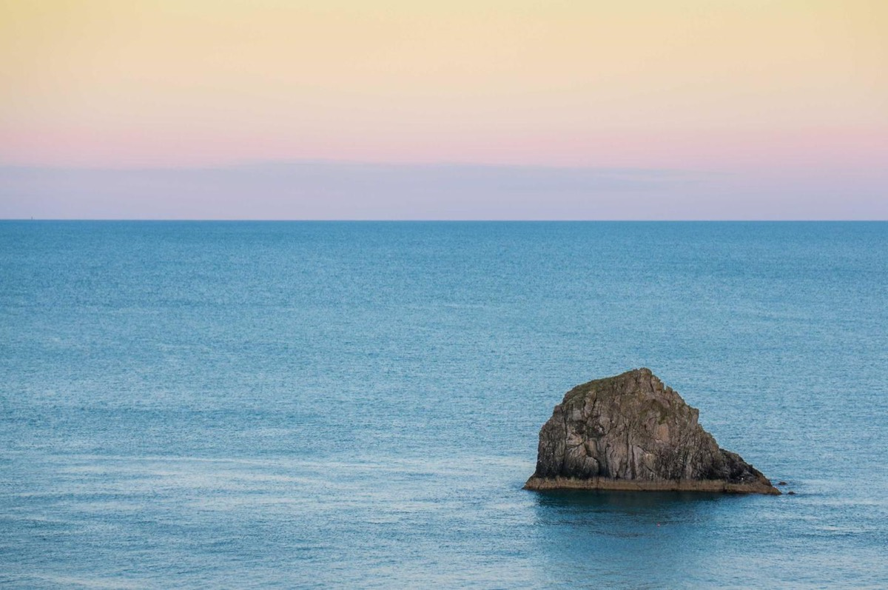
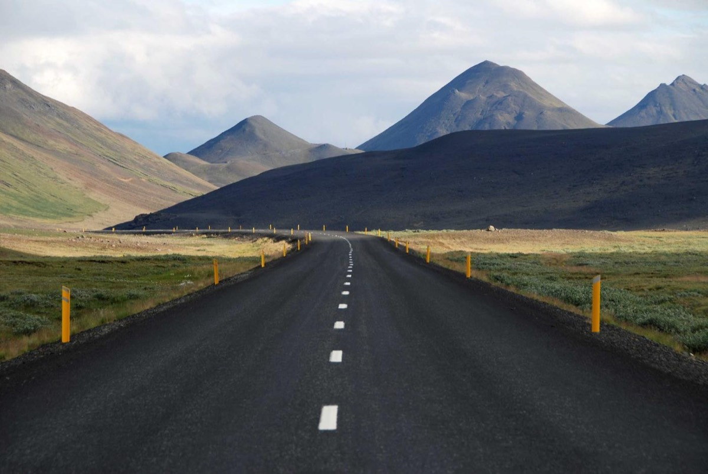
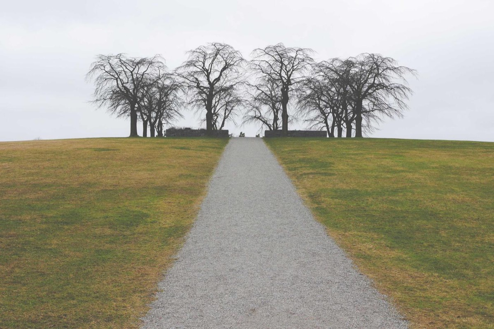
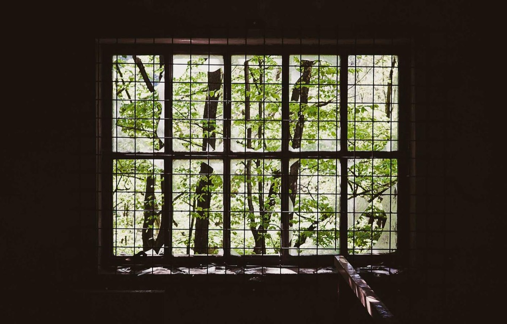
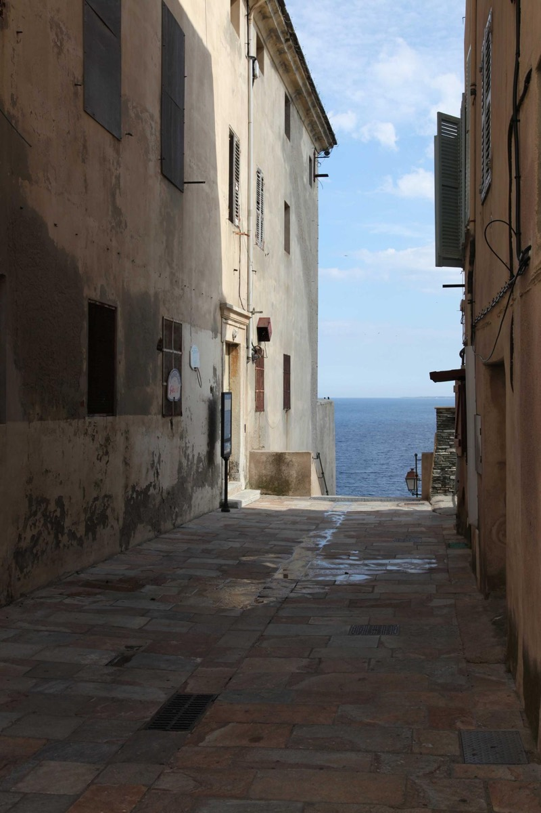
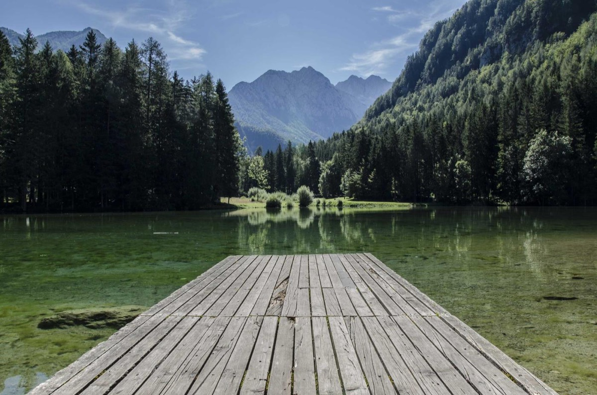
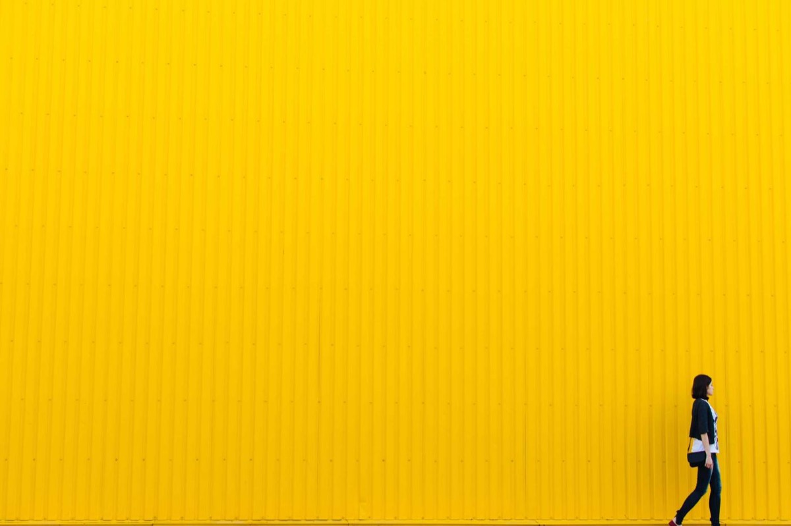
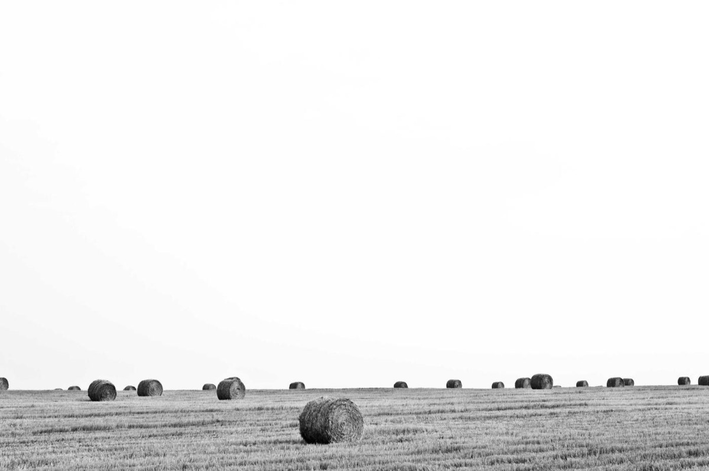

A camera is a dark box that catches light. Everything in photography comes down to four parts and what they do to that light. The lab next to this text is a working camera: read here, play there.
The four parts
Lens
Bends light so every point in the scene lands as a point on the sensor. Its focal length decides how much you see.
Aperture
An adjustable hole inside the lens. Wider lets in more light and blurs the background more.
Shutter
Two curtains in front of the sensor. Decides how long light falls on it, which freezes or smears motion.
Sensor + ISO
Millions of tiny light buckets that record the picture. ISO boosts their signal when light is low.
In the lab's diagram, light travels from the scene on the left into the camera on the right. Find the lens (two pieces of glass), the dark aperture blades between them, the grey shutter and the green sensor.
Try it
Light comes from everything, in every direction
Sunlight or lamplight hits every object. A matte surface like skin, cloth or brick scatters that light out in all directions, like millions of tiny lamps. A shiny surface like a mirror sends most of it one way.
The camera only sees the thin cone of that light that happens to head into the lens. Everyone standing around sees the same person because each of them catches a different part of the same scattered light.
Try it
When "Play light" runs, dots that hit the aperture blades are discarded with a red ✕. The rest reach the sensor and make it glow.
Focus means the rays meet on the sensor
Follow the orange rays from the person. They leave one point, spread out, get bent by the lens, and come back together. When they meet exactly on the sensor, that point is sharp. When they meet in front of or behind the sensor, they land as a small disc, and the point looks blurry.
Try it
You can also click any subject in the diagram or in the photo. Watch the lens slide and the rays of the new subject meet on the sensor.
The image lands upside down
The ray through the center of the lens does not bend. A ray from the top of a subject goes down through the center and lands at the bottom of the sensor. So the whole picture is upside down (and flipped left to right). The camera simply turns it back.
Try it
Drag the lights up in the diagram and watch their spot on the sensor move down.
Inside the lens
A real lens is a stack of glass. The simulator shows two pieces: a front glass and a rear glass, both convex (thicker in the middle), so each bends light inward. The aperture sits between them, which lets it trim the light cone evenly for every point in the frame. Real lenses also include concave pieces that spread light a little to cancel color fringes and soft corners. Together they act like one convex lens.
Check yourself: why can you see a person from anywhere in a room?
Because their skin and clothes scatter light in every direction. Your eye, like the lens, just catches the small cone of that light that comes toward it.
Check yourself: what does "in focus" mean for the rays?
All rays from one point of the subject come back together at one point exactly on the sensor.
Chapter 2
Focal length: how much you see
Focal length decides how wide or how zoomed in your picture is. It is one of the first choices you make, and it also changes how the background looks.
Field of view
The field of view is the angle the camera sees. It is set by two things: the size of the sensor and the focal length. The dashed lines in the diagram start at the sensor edges and pass through the lens center. A longer focal length puts the lens further from the sensor, so those lines close in.
Focal length (full frame)
Sees across
Typical use
14 mm
104°
Ultra wide: rooms, big landscapes
24 mm
74°
Wide: landscapes, street, travel
35 mm
54°
Street and documentary, "what you notice"
50 mm
40°
Normal: close to how your eyes feel
85 mm
24°
Portraits: flattering faces, soft background
135 mm
15°
Tight portraits, details
200 mm
10°
Sports, wildlife, far subjects
Try it
Examples: same place, different focal lengths
The camera does not move. Only the focal length changes. Notice how the person grows, the leaves in front leave the frame, and the wall fills the background.
24 mm Wide. The whole scene, person small.35 mm Still wide, a natural street view.50 mm Normal. Close to what your eyes notice.85 mm Portrait length. The person fills the frame.135 mm Tight. Only the upper body.200 mm A detail of the scene.
Zoom with your feet: perspective
Here the person stays the same size because the photographer walks back as the focal length grows. The wall is always 5 m behind the person. Look how the background changes: with a wide lens close up, the wall looks far away and small. With a long lens from far away, the wall looks big and close behind the person. This is called compression. It comes from where you stand, and the focal length just crops to it.
24 mm from 1.9 m Wall looks distant, lots of surroundings.50 mm from 4 m A natural balance.135 mm from 10.8 m Wall looms big behind the person.
Sensor size and crop factor
The lens throws a round image into the camera. The sensor only records the part that lands on it. A smaller sensor has its edges closer to the center, so the same lens sees a narrower view. The crop factor tells you how much: multiply the focal length by it to get the "35 mm equivalent", the focal length that would frame the same on full frame.
Sensor
Size
Crop factor
50 mm frames like
Full frame
36 × 24 mm
×1.0
50 mm
APS-C
23.5 × 15.6 mm
×1.5
77 mm
Micro 4/3
17.3 × 13 mm
×2.0
100 mm
Phone (1/1.3")
9.8 × 7.4 mm
×3.5
176 mm
Full frameAPS-CMicro 4/3Phone size
Try it
Prime lens vs zoom lens
A prime has one focal length. A zoom moves glass groups inside to change its focal length. Switch the lab's lens and zoom into it to watch the groups slide.
Try it
Check yourself: is focal length the length of the lens?
No. It is the distance from the lens's optical center to F, the point where light from very far away comes together. It describes how strongly the glass bends light.
Check yourself: does a 50 mm lens on APS-C become a 75 mm lens?
No, it is still a 50 mm lens. The smaller sensor just crops the view, so it frames like about 75 mm would on full frame.
Check yourself: what really causes "compression"?
Standing further away. The long lens only lets you fill the frame from that distance.
Chapter 3
Aperture: light and blur
The aperture is the hole inside the lens. It changes two things at once: how much light gets in, and how much of the scene in front of and behind your subject is blurred.
What the f-number means
The f-number is focal length ÷ opening width. So f/2 on a 50 mm lens is a 25 mm hole, and f/8 is a 6.25 mm hole. A bigger number means a smaller hole. Because it is a ratio, f/4 lets in the same amount of light on any lens.
The amount of light depends on the area of the hole. Each "full stop" below halves the area, so it halves the light:
f-number
Opening on 50 mm
Light compared to f/1.4
f/1.4
35.7 mm
all of it
f/2
25.0 mm
1/2
f/2.8
17.9 mm
1/4
f/4
12.5 mm
1/8
f/5.6
8.9 mm
1/16
f/8
6.3 mm
1/32
f/11
4.5 mm
1/64
f/16
3.1 mm
1/128
Try it
You can also drag the aperture blades up and down in the diagram.
Examples: f/1.8 to f/22, same brightness
Each photo is at 85 mm, focused on the person. The shutter speed was changed each time to keep the brightness the same. Watch the wall go from soft to sharp. Also notice the car: at f/11 and f/22 the shutter had to be so slow that it smears.
f/1.8 Very soft wall, lights become big discs.f/2.8 Soft background, person stands out.f/5.6 Bricks start to show.f/11 Wall almost sharp. Car smears (slow shutter).f/22 Everything sharp, but diffraction softens fine detail.
Check yourself: does closing the aperture crop the picture?
No. The framing is set by the sensor edges and the lens center. Closing the aperture only removes outer rays, which makes the photo darker and the background sharper.
Check yourself: f/2.8 to f/5.6 is how many stops?
Two stops (f/2.8 → f/4 → f/5.6), so a quarter of the light.
Chapter 4
Focus and depth of field
Focusing moves the lens a few millimetres so that one chosen distance lands sharp on the sensor. How deep the sharp zone is around that distance is the depth of field.
Examples: where you focus
Same camera, same f/1.8, only the focus distance changes. Your eye always goes to what is sharp.
Leaves (1 m)Person (4 m)Wall (8 m)Infinity
Try it
Or drag the green focus line in the diagram and watch the lens slide.
What happens inside the lens when you focus
Depth of field: how deep the sharp zone is
Only one distance is truly sharp, but things a little in front and behind still look sharp. That zone is the depth of field, the green band in the diagram. It gets shallower with:
a wider aperture (f/1.8 is shallower than f/8),
a closer subject (focusing at 1 m is much shallower than at 10 m),
a longer focal length at the same distance.
85 mm f/1.8 Thin: only the person.85 mm f/8 Deeper: wall almost sharp.Person at 2 m Shallow.Person at 8 m Much deeper.
Too close to focus
The closer something is, the further behind the lens its light comes together. The lens can only move out so far. Past that point, the minimum focus distance (about 45 cm for a 50 mm lens), it cannot focus at all. A macro lens or extension tubes give more extension, so they focus much closer.
Try it
How the camera finds focus
Most cameras do not measure the distance to the subject. They look at the light on the sensor and move the lens until it is sharp:
Contrast detection: move the lens a little, measure sharpness, repeat until it peaks. Accurate but it hunts back and forth (like the hunting you see when something is too close).
Phase detection: special pixels compare light from the left and right sides of the lens. Out of focus, the two views are shifted. The direction and size of the shift tell the camera exactly which way and how far to move. Fast, no hunting.
Distance sensors: some phones fire a laser or LiDAR pulse and time the echo, which helps in the dark.
The lens has a position sensor in its focus motor, so it knows its own extension. Using the lens formula, the camera turns that into the "focus distance" saved with your photo.
Check yourself: does focusing change the focal length?
No. Focusing adds extension (moves the lens further from the sensor). Lens to sensor = focal length + extension.
Check yourself: why does a lens barely move to focus from 3 m to infinity?
Extension = f² / (d − f). It stays tiny for far distances and grows quickly only up close.
Chapter 5
Background blur and bokeh
That soft, creamy background in portraits is not a filter. It is every point of the background landing on the sensor as a small disc. Here is exactly how to make it stronger or weaker.
Drag the wall in the diagram nearer or further and read the numbers above change.
Four ways to get more background blur
The first photo is the starting point. Each of the others changes just one thing.
Start 50 mm, f/5.6, wall 2 m behind.1. Wider aperture f/1.8 instead of f/5.6.2. Longer lens 135 mm, stepped back to keep the framing.3. Background further away wall 21 m behind.4. Get closer person at 2 m (wall still 2 m behind).All together The classic portrait look.
The shape of bokeh
Small lights show the single discs clearly. Each disc takes the shape of the aperture opening: round when wide open, a polygon of the blades when closed down. That is why some lenses are praised for "round bokeh": they have more, curved blades.
f/2 Big round discs.f/5.6 Smaller, 7-sided.f/11 Tiny, almost points.
Check yourself: why does moving the wall from 20 m to 50 m barely add blur?
The blur disc grows toward a limit set by the aperture and focal length. Past a certain distance the background is already "almost infinity" for the lens.
Chapter 6
Shutter speed: time and motion
The shutter decides how long the sensor sees light. Short times freeze motion. Long times record movement as a smear, and also record your shaking hands.
How the shutter works
Most cameras use two curtains just in front of the sensor. The first curtain drops to uncover the sensor, then the second follows to cover it again. The time between them is the shutter speed. At very fast speeds the second curtain starts before the first has finished, so only a narrow slit sweeps across the sensor.
Try it
Examples: freezing the car
The car drives at 36 km/h. Each photo keeps the same brightness by trading aperture and ISO.
1/1000 s Frozen.1/125 s A slight smear.1/30 s Clearly moving.1/8 s A streak.
Shutter speed
Good for
1/2000 s and faster
Birds, sports, splashing water
1/500 s
Running people, kids, pets
1/125 to 1/250 s
Walking people, everyday photos
1/60 s
Still people, handheld with a normal lens
1/15 s and slower
Tripod: silky water, light trails, night scenes
Camera shake and the handheld rule
Your hands always move a little. A rule of thumb: handheld, use at least 1 / (focal length × crop factor) seconds. With a 50 mm lens on full frame, 1/50 s or faster. Longer lenses magnify shake, so they need faster speeds. Image stabilisation can buy you a few stops.
Handheld 1/125 s Sharp.Handheld 1/30 s Slightly soft.Handheld 1/8 s Everything shakes.
Try it
Check yourself: handheld with a 200 mm lens on APS-C, what is a safe speed?
200 × 1.5 = 300, so about 1/300 s or faster (1/320 s).
Chapter 7
ISO: brightness with a cost
ISO does not let in more light. It amplifies the signal the sensor already caught. When there is little light, that boost also amplifies the random speckle in the signal, which you see as grain.
Why noise happens
Light arrives as individual particles called photons, and they arrive randomly, like raindrops. With lots of light the randomness averages out. With very little light, neighbouring pixels catch noticeably different counts, and boosting the signal makes that difference visible. A bigger sensor catches more light in total, so at the same ISO it looks cleaner.
Try it
Examples: a night scene
ISO 400 Clean but three stops too dark.ISO 3200 Right brightness, some grain.ISO 3200, phone sensor Much grainier.ISO 25600 at 1/500 s Frozen car, heavy grain.
Rule: use the lowest ISO that still lets you get the aperture and shutter speed you need. Raise ISO last.
Check yourself: ISO 100 to ISO 400 is how many stops brighter?
Two stops: 100 → 200 → 400.
Chapter 8
The exposure triangle
Aperture, shutter speed and ISO all change brightness. A "stop" doubles or halves it. You can reach the same brightness many ways, and each way gives a different look.
One stop on each control
Control
One stop brighter
Side effect
Aperture
f/4 → f/2.8
Shallower depth of field
Shutter
1/250 → 1/125 s
More motion blur and shake
ISO
200 → 400
More grain
The meter under the photo shows how far you are from a good exposure, in stops (EV). The "Fix brightness" buttons solve it with the control you choose.
Try it
Examples: same brightness, three looks
Portrait f/1.8, fast shutter: soft background, frozen.Deep and slow f/8: everything sharp, car smears.Deep and frozen paid for with ISO 1600 grain.
Examples: under and over exposed
-2 EV Too dark, shadows lost.0 EV Right.+2 EV Too bright, sky and skin blown out.
Light
Scene EV
Example settings at ISO 100
Bright sun
15
f/16, 1/125 s ("sunny 16")
Cloudy
12
f/5.6, 1/125 s
Golden hour
10
f/2.8, 1/125 s
Indoors
7
f/2, 1/30 s (or raise ISO)
Night street
4
f/2.8, 1/60 s at ISO 3200
Try it
Check yourself: you close from f/2.8 to f/5.6. What shutter keeps the same brightness if you were at 1/250 s?
Two stops less light, so two stops slower: 1/250 → 1/125 → 1/60 s.
Chapter 9
Composition: guiding the eye
Settings make a photo correct. Composition makes it interesting. The tools here are simple: layers of depth, lines that lead, where you place the subject, and what you keep out of the frame.
Layering: foreground, subject, background
A photo feels deep when it has three layers: something close in the foreground, the subject in the middle, and a background behind. The eye enters at the soft foreground, lands on the sharp subject, then drifts to the background. That path is called the visual flow.
Layered Soft leaves, sharp person, soft wall.No foreground Flatter, less depth.Everything sharp The layers merge together.
Try it
Leading lines
The eye follows lines. In our scene the stone path runs straight toward the person and pulls the viewer in. Roads, railings, fences, rivers and shadows all work the same way. Try to make them point at your subject, not out of the frame.
Rule of thirds
Imagine the frame split into three by three. Placing the subject or their eyes on one of the lines or crossings usually feels more natural than dead center, and leaves room for the background to tell a story. Centered works too, for symmetry and strong, direct portraits. In the lab, drag the person left or right in the photo.
Centered Direct and calm.On the right third Space for the scene.On the left third The leaves balance the right.
Try it
Background and separation
A busy background competes with your subject. Three ways to clean it up: blur it (wide aperture, longer lens, more distance), move so something plain is behind the subject, or change your angle. Watch for lines or objects that seem to grow out of the subject's head.
Wall right behind Bricks compete with the person.Far, soft wall The person pops out.
More composition tools
Frame within a frame: doorways, windows, branches around the subject focus attention.
Negative space: empty area around a small subject can feel calm or lonely.
Camera height: eye level feels natural, lower makes a subject powerful, higher makes it small.
Light direction: side light shows texture and shape, back light gives a glowing outline, golden hour is soft and warm.
Edges: before you shoot, run your eye around the frame edges and remove anything distracting.
Chapter 10
Composition in real photos
Real photographs by working photographers, with the composition drawn on top. Then you decide which crop works best, and practise cropping yourself. Press "Hide guides" on any photo to see it clean.
Rule of thirds
The two lines across and two lines down split the frame into nine parts. Strong photos often place the subject on a line or a crossing, and the horizon on the top or bottom line instead of the middle. That leaves two thirds of the frame for the part that matters most.

Subject near the right thirdHorizon on the lower third
Silhouette at sunset. The person sits close to the right third line and the horizon rests on the lower third, so the glowing sky gets most of the frame.Photo: lee Scott (Unsplash)

Rock on the lower right crossingHorizon near the upper third
Sea rock. The rock sits right on a thirds crossing. The empty sea to its left gives it room and calm.Photo: Stephen Radford (Unsplash)
Leading lines
Lines in the scene pull the eye along them. When they all run toward one point, the eye lands exactly there. Look for paths, roads, rails, fences, piers and rivers, and make them point into the frame.
Every line meets here
Pier. Railings and boards all converge on one point near the horizon. The eye travels straight down the pier and out to sea.Photo: Christian Holzinger (Unsplash)

The road leads to the mountains
Road into the mountains. The edges and the dashed center line carry you from the bottom of the frame to the peaks.Photo: Bec Brown (Unsplash)
Symmetry and framing
Symmetry gives a calm, formal feeling. Here the rule of thirds is broken on purpose: the subject goes dead center. Framing uses something in the scene, like a window, an arch or two walls, to draw a border around the subject. It focuses attention and adds depth.

Mirror line
Path to the trees. Path and trees are centered, so both halves mirror each other. Centered composition works when the scene itself is symmetrical.Photo: Jon Ottosson (Unsplash)

The window is the frame
Window. The dark wall frames the bright view. The eye cannot escape the rectangle, so it studies the trees inside.Photo: Martin Wessely (Unsplash)

Walls frame the sea
Alley to the sea. Two walls squeeze the view down to a small slice of blue, and the paving leads you toward it. A vertical photo suits the tall, narrow scene.Photo: Bertrand Zuchuat (Unsplash)
Layering: foreground, middle, background
Three planes of depth turn a flat picture into a place you could walk into: something near the lens, something in the middle, something far away. This is the same idea as the leaves, person and wall in the lab, in a real landscape.

3 Background: forest and mountains2 Middle: the lake1 Foreground: the jetty
Jetty and lake. The jetty pulls you in from the bottom edge (also a leading line), the lake carries you across, and the mountains close the scene.Photo: Ales Krivec (Unsplash)
Negative space
Empty space around a small subject makes it stand out and gives a quiet, minimal mood. The empty area is not wasted: it is what makes the subject feel small, alone or free.

A tiny subjectEmpty yellow space
Yellow wall. One small figure at the edge of a huge flat color. Your eye goes straight to the only detail.Photo: Rodion Kutsaev (Unsplash)

One hay baleWhite sky as negative space
Hay bale. Almost the whole frame is empty white sky, so the single bale in front reads clearly.Photo: Pavel Voinov (Unsplash)
Example gallery: real photos by subject
Trees, mountains, flowers, cars, cities, animals, people, water, food and night skies. Filter by subject or by technique, then click any photo to see it large with a thirds grid and the explanation. Use the arrow keys to move through them.
Which crop is better?
Cropping is composing after the fact. Each question shows three crops of the same photo. Pick the one you think works best, then read why.
1. A beach horizon. Where should the horizon go?
B works best. The sky is flat grey, while the wet sand holds reflections and texture. Putting the horizon on the upper third gives two thirds of the frame to the interesting part. A splits the photo into two equal halves that compete, and C fills the frame with dull sky.
2. A portrait looking right. Where should the person go?
A works best. Leave space in the direction someone looks or moves (called lead room or looking room). In B she stares at the edge of the frame, which feels cramped and tense. C cuts through the face: if you crop a person, cut between joints, never across the eyes, chin, knees or wrists.
3. The sea rock. Which crop tells the story best?
B works best. The rock on a thirds crossing plus the horizon and empty sea give context and calm. A loses the sense of place and feels like a record shot. C slices the subject at the frame edge, which always looks like a mistake.
Crop trainer
Drag the box to move it and drag its corners to resize. The thirds grid moves with your crop, and the feedback updates as you go. Try each photo and each shape.
Photos: lee Scott, Stephen Radford, Matthew Wiebe, Joshua Earle (Unsplash)
Rules are tools
None of these are laws. Center the subject for symmetry, put the horizon in the middle for a perfect reflection, fill the frame for intimacy. Learn the guidelines so that when you break one, you do it on purpose.
All photos in this chapter are from Unsplash (Unsplash License, free to use), served through Lorem Picsum. Photographers: lee Scott, Stephen Radford, Christian Holzinger, Bec Brown, Jon Ottosson, Martin Wessely, Bertrand Zuchuat, Ales Krivec, Rodion Kutsaev, Pavel Voinov, Neil Thomas, Matthew Wiebe, Joshua Earle. The 59 gallery photos credit their photographers when you open them.
Chapter 11
Putting it together
A simple order of decisions that works for most photos, a live checklist for your current settings, and four challenges to practise.
A shooting workflow
Subject and background. What is the photo about, and what is behind it?
Position and focal length. Where you stand sets the perspective. The focal length sets the framing.
Aperture for the look. Wide for a soft background, narrow for everything sharp.
Shutter for motion. Fast enough to freeze movement and avoid shake.
ISO last. Only as high as needed to get the brightness right.
Focus on the most important part, usually the eyes.
Check the meter and the edges, then take the photo.
Shot checklist
Live check of the lab's current settings.
Challenges
Each challenge loads a scene with something wrong. Fix it with the lab until the checklist is happy, then compare with the solution.
1. Night portrait
It is dark, you are handheld, and the photo is black. Get a bright, sharp photo of the person.
Show a solution
Open to f/1.8 (less depth, more light), keep about 1/60 s (safe for 50 mm), then raise ISO to around 1600 to 3200.
2. Freeze the car
The car is a streak. Freeze it without making the photo dark.
Show a solution
1/1000 s freezes it. That is 7 stops less light than 1/8 s, so open to f/2.8 (4 stops) and raise ISO to 800 (3 stops).
3. Dreamy background
The wall is sharp and busy. Make it as soft as you can while the person stays sharp.
Show a solution
Use a longer lens and step back, open wide, and put distance behind the person.
4. Everything sharp
Leaves, person and wall should all look sharp, like a landscape photo.
Show a solution
Close to f/11 and focus around 2 m. With a wide lens that keeps everything from about 1 m to infinity sharp (the hyperfocal idea). Slow the shutter to keep the brightness.